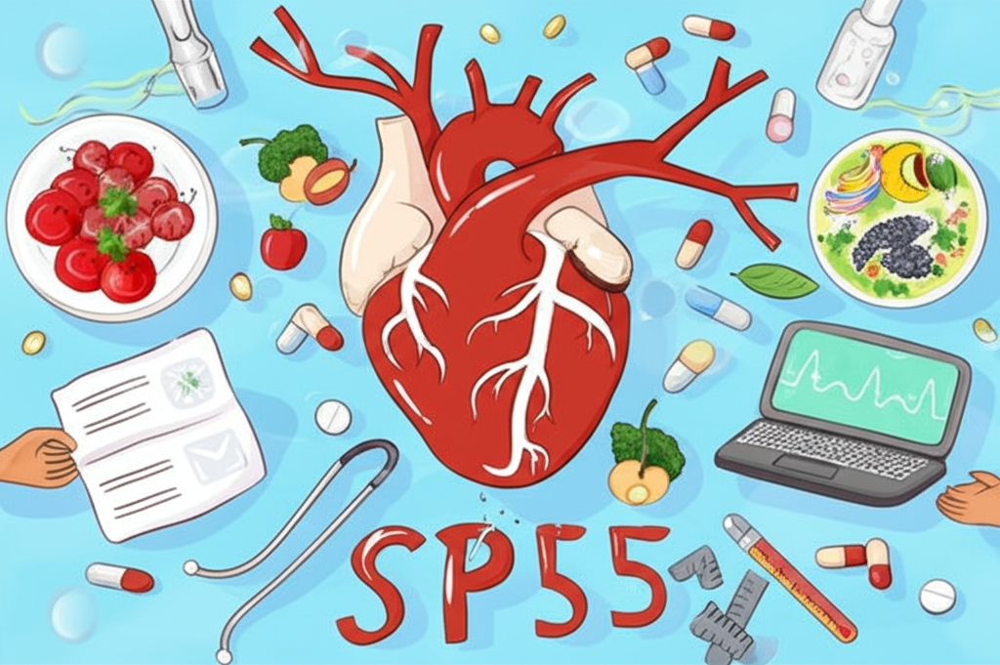

近期網路資訊聚焦於高血壓及其相關的健康議題，從花費健保金額最高的疾病，到飲食控制、季節變化對血壓的影響，都引起了廣泛關注。本文將整理這些資訊，提供關於高血壓控制、飲食建議以及其他相關健康議題的概覽，幫助讀者更好地了解和管理自身健康。
據新聞報導，健保支出最高的疾病與腎臟相關，而糖尿病、高血壓、高尿酸、肥胖是腎臟的四大惡友。高血壓不僅影響腎臟健康，更是國人十大死因之一，顯示其對健康的重大威脅，以及醫療資源的龐大需求。
網路上流傳許多關於降血壓的飲食方法，例如「香蕉皮煮水」等，但國健署已澄清，這些方法缺乏科學證據。營養師則建議，控制水果攝取量，並選擇適合的水果，如芭樂，有助於降血壓。針對高血壓患者，均衡飲食、控制鹽分攝取，才是更有效且安全的策略。另外腎臟權威也提供十大護腎必吃食物，飲食對於控制血壓，保護腎臟至關重要。
隨著天氣轉暖，高血壓患者需要注意。氣溫變化可能導致血壓波動，增加腦出血等風險。另外早晚溫差大也可能影響血壓，建議注意保暖，並持續用藥控制。避免疲勞、維持良好生活習慣，也是控制血壓的重要因素。
除了高血壓，其他健康議題也備受關注，例如腎臟健康、手術方式的進步（機器人手術），以及失智長者的照護等。全面性的健康管理，應涵蓋飲食、運動、作息，以及定期檢查。
高血壓是一個影響廣泛的健康問題，控制血壓需要從多方面入手，包括飲食控制、規律作息、適當運動，以及配合醫囑用藥。面對網路資訊，應保持理性，不輕信未經證實的偏方。透過科學的方法、積極的生活態度，才能有效控制血壓，維護健康。